À propos de Kairouan
Kairouan est l’une des villes les plus emblématiques de la Tunisie et du monde musulman. Classée au patrimoine mondial de l’UNESCO, elle incarne la spiritualité, l’histoire et l’authenticité tunisienne.
Emplacement
Située au centre de la Tunisie, Kairouan se trouve à environ 160 km au sud de Tunis. Sa position stratégique en a fait, depuis des siècles, un important carrefour religieux et culturel.
Histoire
Fondée en 670 après J.-C. par Oqba Ibn Nafi, Kairouan est la première ville islamique du Maghreb. Elle fut longtemps une capitale religieuse et intellectuelle, jouant un rôle majeur dans la diffusion de l’islam en Afrique du Nord.
Caractéristiques
- Artisanales: La ville est célèbre pour ses tapis traditionnels faits à la main, reconnus pour leur qualité et leur authenticité. L’artisanat local comprend également la poterie et les objets décoratifs traditionnels.
- Gastronomiques: La cuisine kairouanaise est réputée pour ses plats traditionnels et ses pâtisseries typiques, notamment le makroudh, symbole culinaire de la ville.
- Architecturales: Kairouan se distingue par une architecture arabo-musulmane sobre et harmonieuse : coupoles, minarets, cours intérieures et façades en pierre reflètent un style unique et intemporel.
Top Places à Visiter
1.Grande Mosquée de Kairouan
Aussi appelée mosquée Oqba Ibn Nafi, c’est l’un des monuments les plus importants de l’islam. Son architecture sobre et imposante, ainsi que sa vaste cour, témoignent de plus de 13 siècles d’histoire.
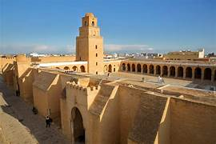
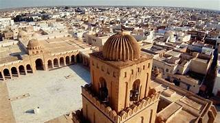
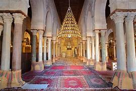
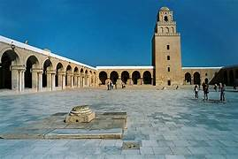
2.Mosquée des Trois Portes
Réputée pour sa façade finement sculptée, elle est l’un des plus anciens exemples d’architecture islamique décorative en Tunisie.
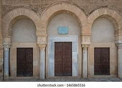
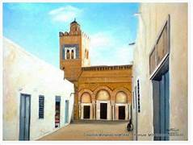
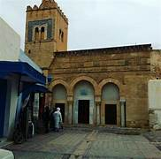
3.Bassins des Aghlabides
Ces immenses réservoirs d’eau datant du IXᵉ siècle illustrent le génie hydraulique de l’époque aghlabide et constituent un site historique impressionnant.
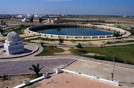
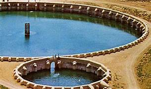
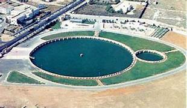
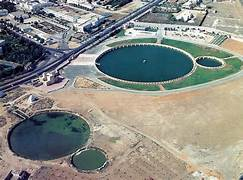
4.Médina de Kairouan
Un dédale de ruelles authentiques où l’on découvre artisanat, tapis traditionnels, parfums et spécialités locales dans une ambiance hors du temps.
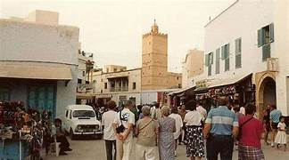
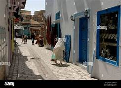
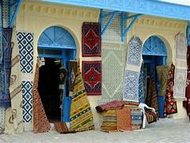
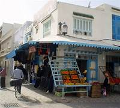
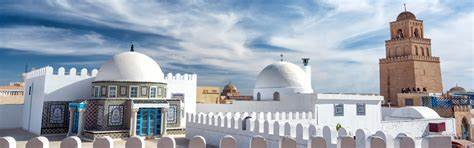
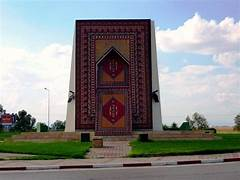
🍽️ Top Restaurants
-
Restaurant El Brija :
Un restaurant réputé pour sa cuisine tunisienne traditionnelle. On y déguste des plats généreux dans un cadre calme et authentique, apprécié aussi bien par les locaux que les visiteurs.
-
Dar Abderrahmane Zarrouk :
Installé dans une maison traditionnelle, ce restaurant propose une expérience culinaire raffinée mêlant gastronomie locale et cadre historique.
-
Restaurant Sabra :
Idéal pour goûter aux spécialités kairouanaises dans une ambiance conviviale, avec un bon rapport qualité-prix.
☕ Cafés & Salons de Thé Recommandés
-
Café El Madina :
Situé près de la médina, ce café est parfait pour se détendre après une visite. Il offre une ambiance traditionnelle et un thé à la menthe très apprécié.
-
Café des Nattes :
Un lieu emblématique où l’on s’assoit sur des nattes pour savourer un thé ou un café, dans une atmosphère typiquement kairouanaise.
-
Salon de thé Dar El Kaid :
Un salon élégant et calme, idéal pour déguster des pâtisseries tunisiennes dans un cadre traditionnel et chaleureux.